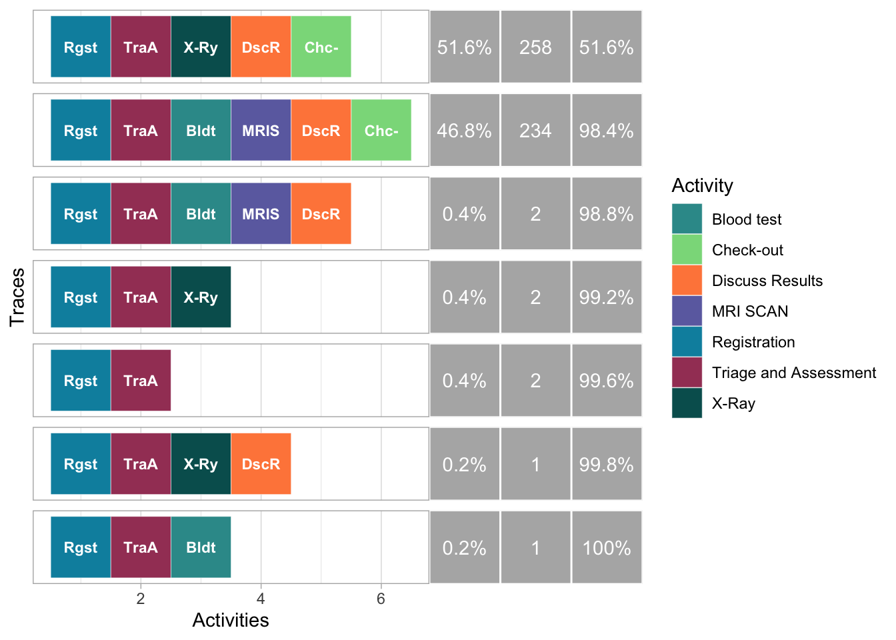

Process Mining
Process mining is een krachtige tool die bedrijven in staat stelt diepgaand inzicht te verkrijgen in hun interne processen. Het stelt organisaties niet alleen in staat om deze processen beter te begrijpen, maar ook om eventuele knelpunten te identificeren en te optimaliseren. In dit artikel belichten we de toegevoegde waarde van process mining aan de hand van een illustratief voorbeeld: de toepassing ervan op de eerste hulp van een ziekenhuis.
Bij dit voorbeeld maken we gebruik van fictieve data om de werking van process mining te demonstreren. Het is belangrijk op te merken dat zowel de verstrekte data als de casus fictief zijn en slechts een vereenvoudigde weergave van de realiteit vormen. Desalniettemin biedt deze fictieve situatie een duidelijk inzicht in de mogelijkheden die process mining kan bieden.
Casus
Paul is het hoofd van de Eerste Hulp in het ziekenhuis. Hij heeft budget gekregen om de eerste hulp te verbeteren, maar weet niet hoe hij dit nu het beste kan aanpakken. Hij hoort dat patiënten vaak klagen over de lange wachttijden, maar de oorzaak voor deze lange wachttijden is onduidelijk.
Analyse met behulp van Process Mining
Hoe kunnen we Paul helpen en advies geven over de meest effectieve investeringen om de eerste hulp in zijn ziekenhuis te verbeteren door wachttijden te verminderen? Dit vormt een perfect scenario voor de toepassing van process mining.
Eisen
Om process mining succesvol toe te passen, is het essentieel dat alle activiteiten zorgvuldig worden geregistreerd. De benodigde informatie omvat:
- de start en eind tijd van de activiteiten
- de naam of unieke code van de activiteiten
- de naam of unieke code van de patiënten
- de naam of unieke code van de verantwoordelijke arts of afdeling (optioneel)
Analyse
Paul wil graag weten welke stappen worden ondernomen wanneer een patiënt op de eerste hulp belandt. Is er sprake van standaardroutes die patiënten volgen, zijn er onverwachte uitzonderingen? Wat is de meest gangbare route? Om hier inzicht in te krijgen, maken we gebruik van een process map. Deze visualiseert niet alleen het aantal patiënten dat een specifieke handeling ondergaat, maar geeft tevens de opeenvolging van handelingen weer. Zo verkrijgen we helderheid over de gebruikelijke gang van zaken en eventuele variaties in het proces.
Figuur 1. Process map met het percentage patiënten dat een bepaalde handeling ondergaat
Uit deze process map valt direct veel informatie te halen. We zien dat iedere patiënt geregistreerd wordt en triage en assessment ondergaat. Na de triage blijkt dat een patiënt ofwel een bloedtest en een MRI-scan krijgt, of een X-ray ondergaat. Opvallend voor Paul is dat ongeveer evenveel mensen een MRI-scan als een X-ray krijgen, in tegenstelling tot wat hij had verwacht. MRI scans zouden alleen ingezte moeten worden wanneer strict noodzakelijk, aangezien een MRI-scan aanzienlijk duurder is voor het ziekenhuis en ook meer tijd kost. Nadat Paul dit bespreekt met zijn collega’s bij Triage en Assessment, ontdekt hij dat de X-ray afdeling onderbezet is, terwijl het op de MRI-afdeling doorgaans rustiger is. Bovendien wordt er geklaagd over de kwaliteit van het X-ray apparaat. Door de patiënten te verdelen over de Xray en MRI afdeling, probeerden zijn collegas de wachttijd al te beperken.
Nu Paul een beeld heeft van de volgorde en frequentie van de activiteiten op de eerste hulp, is hij benieuwd naar welke activiteiten de meeste tijd in beslag nemen en op welke activiteiten patiënten lang moeten wachten. Om deze informatie te verkrijgen, maken we gebruik van een process map waarin de gemiddelde duur van de activiteiten wordt weergegeven.
Figuur 2. Process map met de gemiddelde duur van de handelingen
Paul merkt direct op dat Triage en Assessment de meeste tijd in beslag nemen, wat in lijn is met zijn verwachtingen. Het is immers tijdsintensief een patiënt te spreken en te beoordelen wat er aan de hand kan zijn. Wat echter opvallend is, is dat een X-ray gemiddeld nog net iets langer duurt dan een MRI-scan, terwijl normaal gesproken een MRI-scan langer duurt. Zijn collega’s die verantwoordelijk zijn voor de X-rays geven aan dat de X-ray machine aanzienlijk verouderd is, wat resulteert in aanzienlijke vertraging bij het maken van een foto, maar ook in het beoordelen van de foto.
Naast de process map zijn er nog andere methoden om inzicht te krijgen in de processen, zoals met een zogenaamde trace explorer:

Figuur 3. Trace Explorer
Elk blokje in de visualisatie vertegenwoordigt een specifieke activiteit, waarbij de volgorde van de blokjes de opeenvolging van de activiteiten aangeeft. Een specifieke reeks activiteiten wordt aangeduid als een ‘trace’. Aan de rechterkant wordt aangegeven hoe vaak deze trace voorkomt. Opvallend is dat de activiteiten niet altijd worden afgesloten met een check-out (het lichtgroene blokje), wat tegen de verwachtingen van Paul ingaat.
Na onderzoek ontdekt Paul dat patiënten die haast hadden en niet wilden wachten op de vervolgstappen en check-out, geen check-out hadden. Dit wijst op een lacune in de administratie. Dit vormt voor Paul nog meer motivatie om de wachttijden in het ziekenhuis te verbeteren.
Conformance checking
In een process zitten vaak bepaalde regels die gevolgd moeten worden, en waar maar met een bepaald percentage van afgeweken mag worden. Dit kunnen we snel analyseren. Hier een paar voorbeelden op de eerste hulp:
- Voordat een MRI scan wordt afgenomen moet er altijd een bloedtest worden gedaan. Dit blijkt in dit geval voor 100% van de patiënten te kloppen.
- Of zoals bovengenoemd, het hele process moet altijd afgerond worden met een checkout. Dit blijkt voor 98.6% van de patiënten te kloppen.
- Een Xray of MRI scan gebeurt maar 1 keer in het proces. Dit is in 100% van de patiënten het geval.
Conclusie
 Na aanleiding van de resultaten verkregen door middel van Processmining, heeft Paul besloten te investeren in een nieuw X-ray apparaat en te onderzoeken welke collega’s op de MRI ook taken op de X-ray afdeling kunnen overnemen. Het resultaat is opmerkelijk: de wachttijd voor patiënten neemt aanzienlijk af, en bovendien krijgen de patiënten nu de behandeling die daadwerkelijk nodig is (namelijk een X-ray in plaats van een MRI). Dit leidt tot tevredenheid bij zowel de patiënten als de werknemers, en natuurlijk Paul zelf.
Na aanleiding van de resultaten verkregen door middel van Processmining, heeft Paul besloten te investeren in een nieuw X-ray apparaat en te onderzoeken welke collega’s op de MRI ook taken op de X-ray afdeling kunnen overnemen. Het resultaat is opmerkelijk: de wachttijd voor patiënten neemt aanzienlijk af, en bovendien krijgen de patiënten nu de behandeling die daadwerkelijk nodig is (namelijk een X-ray in plaats van een MRI). Dit leidt tot tevredenheid bij zowel de patiënten als de werknemers, en natuurlijk Paul zelf.
Het is belangrijk op te merken dat deze casus fictief is en de realiteit vaak complexere processen met zich meebrengt. Dit voorbeeld illustreerd hoe processmining kan helpen bij het identificeren van processen en knelpunten, en hoe deze informatie kan helpen om processen te verbeteren, en daarmee tevredenheid van de klant, en misschien wel de uitkomst van behandelingen. In dit geval hebben we een voorbeeld genomen in het ziekenhuis, maar kan bij allerlei bedrijfsprocessen van pas komen.
Overige toepassingen
Process mining kan ook helpen om andere gegevens te begrijpen, bijvoorbeeld:
- Heeft het process dat de patiënt doorloopt effect op de klant tevredenheid?
- Heeft het process dat de patiënt doorloopt effect op de uitkomst van de behandeling?
- Kunnen we voorspellen wat de uitkomst van een behandeling is op basis van het process dat de patiënt doorlopene heeft?
De gebruikte afbeeldingen zijn afkomstig uit Storyset People Illustrations en Storyset Work Illustrations.